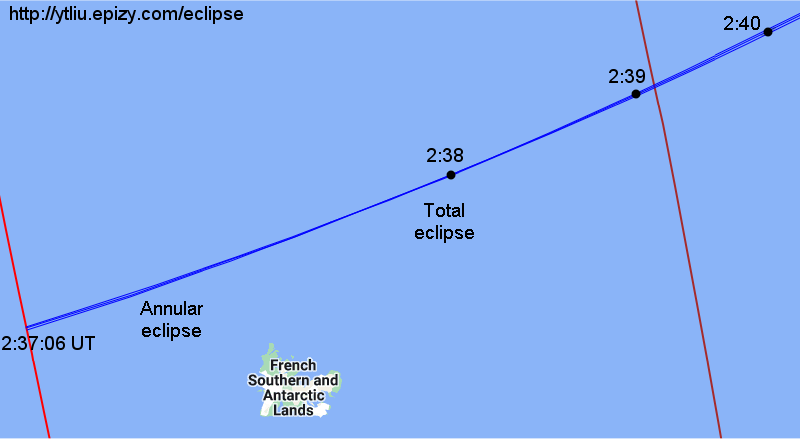
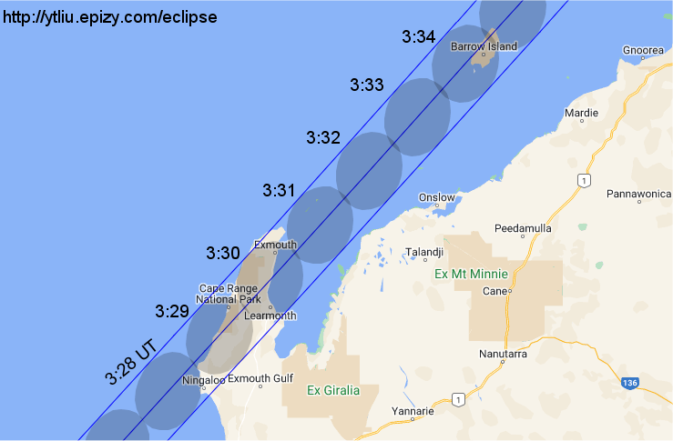
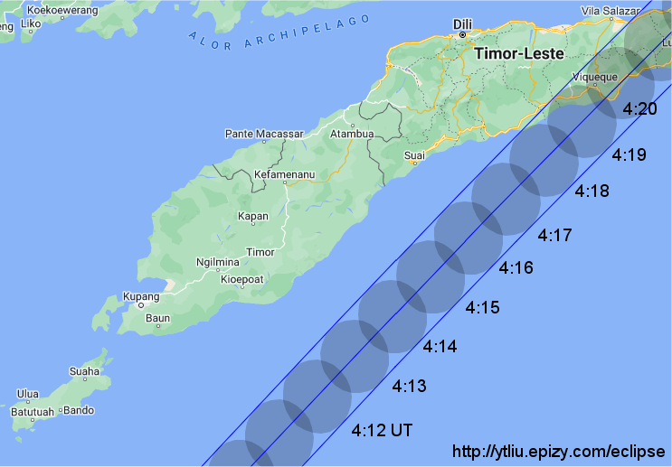
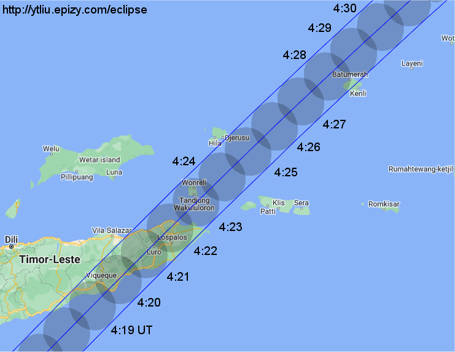
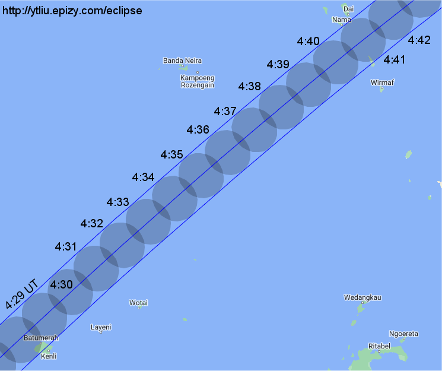
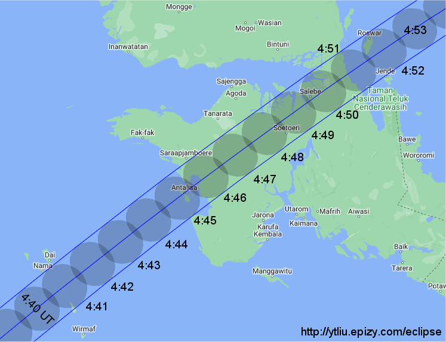
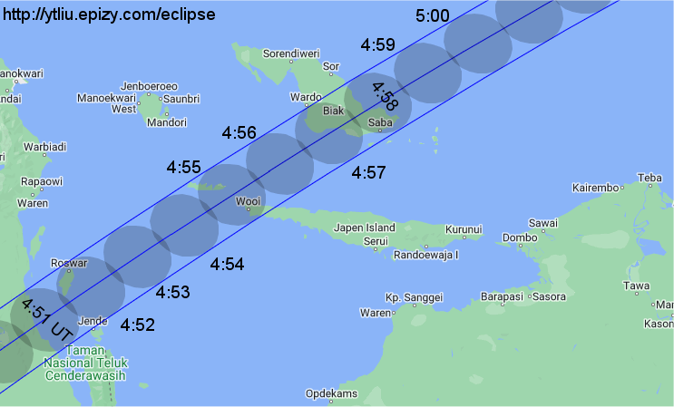
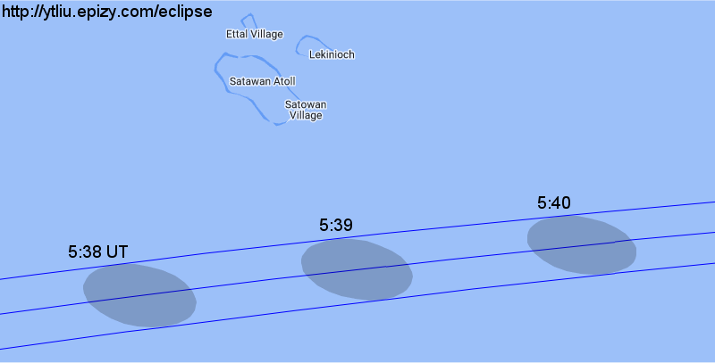
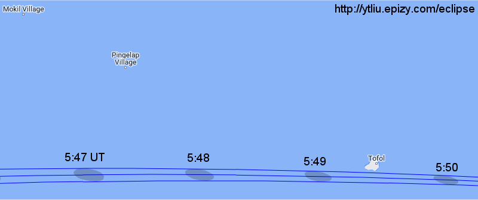
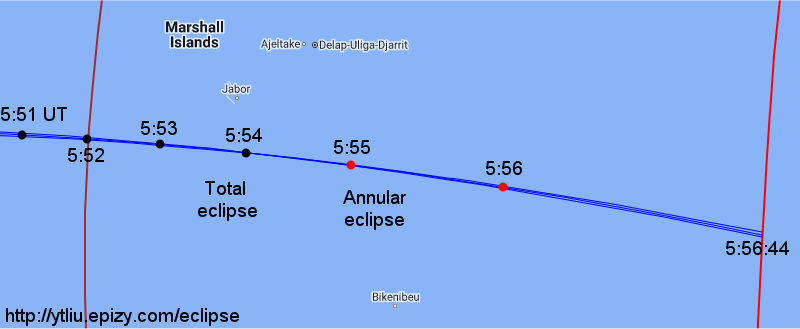

The eclipse starts out as annular as the antumbra enters the Earth in the south Indian ocean, but it quickly turns into total. Over the next 3 hours, the umbra moves northeast, passing through western edge of Australia, Timor-Leste, Indonesia (West Papua and Papua), and Micronesia. The eclipse turns to annular again near the end of the central path in the western Pacific ocean. Partial eclipses are visible in southeast Asia, Indonesia, Papua New Guinea, Australia and New Zealand.
In this animation, the green region is Moon's penumbra. The moving dot shows the motion of the umbra (umbra is too small to see on this scale). The dark region outside the penumbra is Earth's night side.
In the background orthographic map, the red dot at the center is the location of the greatest eclipse, where Moon's shadow axis is closest to the geocenter. The black dot near the bottom is the south pole. The purple lines are the limits of Moon's penumbra. The three blue lines across the map center are the northern limit of umbra/antumbra (upper line), central line (middle line), and southern limit of umbra/antumbra (lower line). For this eclipse, the three lines are very close to each other as the width of the umbra/antumbra is narrow. Total/annular solar eclipse is visible inside the narrow strip bounded by the northern and southern limits of umbra/antumbra. The teardrop-shape brown line on the left (west) is the locus of points where the eclipse begins/ends at Sunrise. The middle red line is the locus of points where the maximum eclipse occurs at Sunrise. The teardrop-shape brown line on the right (east) is the locus of points where the eclipse begins/ends at Sunset. The middle red line is the locus of points where the maximum eclipse occurs at Sunset. No eclipse is visible beyond the region bounded by the brown and purple lines. The orange red lines with the same shape as the penumbra limits are lines of equal eclipse magnitude, and the magnitude is indicated (25%, 50%, 75%) above each line.
In the following maps, the limits of umbra/antumbra and central line are shown together with Moon's umbra/antumbra at different times. Lunar limb corrections are not included in this calculation. When the umbra/antumbra is too small to display on the map scale, it is replaced by a dot. A black dot denotes umbra (total eclipse) and a red dot denotes antumbra (annular eclipse).

Background map source: Google Maps (Map Data ©2023)
The central eclipse starts out as annular, but it turns into total within one minute. The first external contact of antumbra occurs at 2:37:06 UT in south Indian ocean.

Background map source: Google Maps (Map Data ©2023)

Background map source: Google Maps (Map Data ©2023)

Background map source: Google Maps (Map Data ©2023)

Background map source: Google Maps (Map Data ©2023)

Background map source: Google Maps (Map Data ©2023)

Background map source: Google Maps (Map Data ©2023)

Background map source: Google Maps (Map Data ©2023)

Background map source: Google Maps (Map Data ©2023)

Background map source: Google Maps (Map Data ©2023)
The eclipse turns into annular in the last two minutes of the central path. The last external contact of antumbra occurs at 5:56:44 UT.
Background map source: Google Maps (Map Data ©2023)
In this animation, Moon's umbra is indicated by a gray oval. The umbra/antumbra is replaced by a dot when it's too small to show on the map scale. A black dot indicates umbra (total eclipse) and a red dot indicates antumbra (annular eclipse).
The information provided above focuses on the path of Moon's shadow. It's useful if you want to know where and when to see the eclipse. Suppose you have chosen a location to view the eclipse. The next thing you want to know is what you will see at the location. This is called the local circumstances.
The local circumstances of this solar eclipse in major cities around the world can be found on this page on my Eight Millennia of Eclipses website. You can click on the links to see a more detailed information of the eclipse in each city listed there. If you don't find the location you want on that page, go to this interactive map, zoom in to your location and click on it to obtain the eclipse circumstances. Alternatively, you can use the form below to enter your location.
Fill in the longitude and latitude (in decimals) of a location below, click the submit button and it will open my Eight Millennia of Eclipse page on a new browser tab. The page contains the local circumstances of the eclipse and an animation of the eclipse that will be observed at the location.
Longitude: °
Latitude: °
Time Zone: (Enter the UTC offset in hours)
The eclipse data on this website are generated by the same code I developed for my Eight Millennia of Eclipses website using algorithms described in Explanatory Supplement to the Astronomical Almanac (3rd edition) and Elements of Solar Eclipses 1951 - 2200. The center-of-mass positions of the Sun and Moon are calculated using the JPL DE431 or DE441 ephemerides. Lunar limb corrections are not included in this eclipse calculation. Orthographic maps are generated using the GeoViews Python library. Local maps are based on Google Maps.